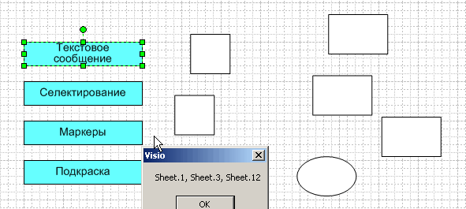
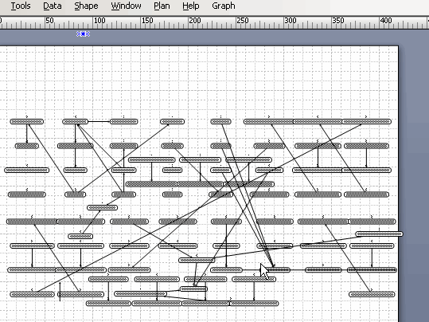

Иногда возникает необходимость выбрать некоторое подмножество шейпов на странице Visio. Сам поиск проблемой не является, но нужно ведь еще отобразить его результат, причем так, чтобы и пользователю было удобно, и рисунок не испортить. Особенно в том случае, когда найденных шейпов много и они разбросаны по всей странице.
Понятно, что методов индикации может быть множество. И чтобы при решении каждой задачи не вспоминать их все, можно собрать все или как минимум наиболее употребительные в один модуль, чтобы оставалось только выбрать нужный. Пока в такой модуль вошли четыре метода:
- текстовое сообщение;
- селектирование;
- добавление маркера;
- подкраска.

Каждый метод имеет свои достоинства и недостатки.
Тестовое сообщение. Имена выбранных шейпов выводятся текстом в виде сообщения.
Достоинства: вывод никак не влияет на рабочий документ.
Недостатки: если шейпов много, то такой способ очень неудобен. Имена не привязаны к расположению, поэтому шейпы придется разыскивать на странице.
Селектирование. Выбранные шейпы селектируются.
Достоинства: вывод привязан к расположению шейпов, оператор сразу видит их все. Документ не портится.
Недостатки: неудобно работать с группами - если выбранный шейп входит в группу, то он может быть пропущен. Кроме того, при случайном нажатии кнопки мыши результат пропадает.
Добавление маркера. К селектированным шейпам дорисовывается дополнительный шейп-маркер.
Достоинства: результат операции хорошо просматривается. Результат сохраняется навсегда или на некоторое время. Факт вхождения выбранного шейпа в группу не мешает правильной индикации.
Недостатки: документ искажается, так как в него вводятся дополнительные шейпы.
Влияние последнего недостатка может быть уменьшено за счет применения Undo.
Подкраска. Выбранные шейпы окрашиваются.
Достоинства. результат хорошо просматривается в течение длительного времени.
Недостатки: искажение рабочего документа. При наличии групп результат может быть искажен, так как группа не подкрашивается.
Внесенное искажение документа возвращается операцией Undo. При наличии групп метод применять нежелательно.
Скорее всего модуль будет расширяться и усложняться, пока представлен только первичный набросок. Напрашивается добавление такого метода, как "вынесение выбранных шейпов на отдельный слой". Неплохо смотрятся комбинации методов. Так, например, в инструменте VisioGraphLab выбранные (связанные) шейпы не только селектируются, но и "отпрыгивают" в сторону для привлечения внимания.

Замечу, что здесь рассматриваются только методы, не требующие предварительной подготовки шейпов. В отличие от Data Graphics, их можно применить практически на любом рисунке.
Исходные материалы, присутствующие на данный момент, можно взять в папке DropBox в виде трафарета, содержащего код методов и тестового файла. Вызывающий макрос в тестовом файле запускается по Dbl-Click с одного из четырех стартовых шейпов, собирает несколько шейпов в коллекцию и вызывает нужный макрос из трафарета, передавая ему эту коллекцию.
Код простейший, так что в дополнительных пояснениях нет необходимости.